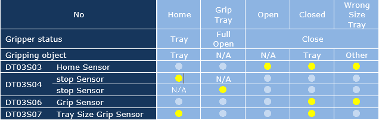

Tray Gripper Sensor States
This topic includes information about the five different sensor states for the tray gripper in the DispoTip Stocker module.
| Table of Contents |
|---|
| Tray Gripper Sensors |
| Tray Gripper Sensor States |
Tray Gripper Sensors
The DispoTip Stocker module tray gripper assembly has five sensors for determining whether the tray gripper is at the expected location. The sensors are home, stop, stock, grip and tray. The table listed below illustrates which sensors are active for the movement. The stock sensor is used for Z axis collision detection. It is not part of the gripper arm detection, but is inlcuded on the diagnostic screen for reference purposes and troubleshooting.


Tray Gripper Sensor States
Listed below are images of common gripper states and their desription.
-
Tray gripper successfully gripping a tray
-
Tray gripper open
-
Tray gripper gripped a wrong sized tray, or didn't grip properly
-
Tray gripper remained open after request to close
-
Tray gripper at home location